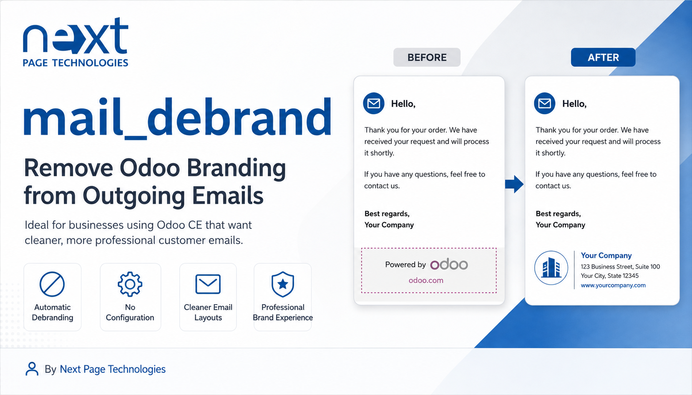
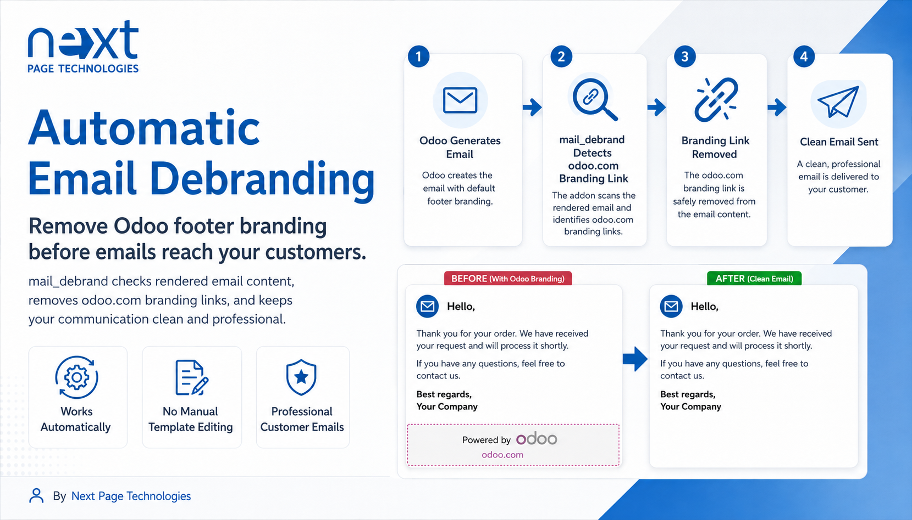
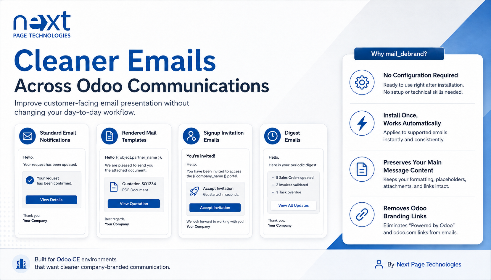

Odoo Mail
Mail Debrand removes Odoo branding links from rendered outgoing emails in Odoo Mail. It cleans mail template output and prepared outgoing email bodies while preserving the original message content written by users.
This addon extends Odoo mail rendering to detect and remove anchors that link to Odoo branding content. The cleanup is applied when Odoo renders mail templates and when outgoing mail bodies are prepared for sending. User-entered body content is protected during outgoing mail preparation.
Removes rendered email anchors that link to odoo.com branding content.
Applies debranding when Odoo prepares outgoing mail bodies for delivery.
Cleans rendered mail template output by processing `mail.render.mixin` results.
Keeps user-authored body content intact while removing surrounding Odoo branding links.
No configuration menu is added by this addon. Install it and the cleanup is applied automatically during supported Odoo mail rendering and outgoing mail preparation flows.
The addon processes outgoing email HTML and removes Odoo branding links while keeping the actual email body content unchanged.

During mail template rendering, links to Odoo branding are detected and removed from the rendered email output.

This addon removes Odoo branding links detected in rendered email HTML. It does not claim complete debranding of every Odoo screen, report, website page, or non-mail feature.
Next Page Technologies Pvt Ltd
https://nextpagetechnologies.com
Next Page Technologies Pvt Ltd
https://nextpagetechnologies.com